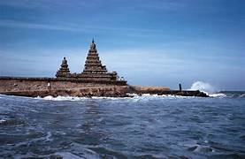
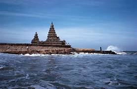
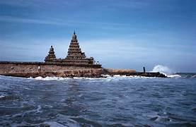
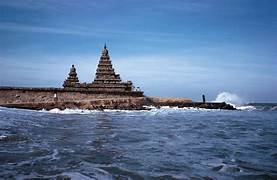

Chennai is a coastal city known for its deep cultural roots and calm lifestyle. It is famous for Marina Beach, ancient temples, classical Carnatic music, and traditional dance forms like Bharatanatyam. The city also has a strong love for simple and healthy food such as idli, dosa, sambar, and filter coffee.
Chennai is also a major center for education, automobile industries, and information technology. Areas like OMR and Guindy are filled with offices and tech parks. Even with modern growth, the city remains disciplined, peaceful, and closely connected to its traditions.